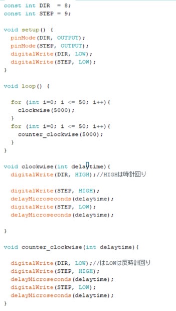

≪Arduinoを使ってステッピングモーターを動かす≫
１．ステッピングモーターのSTEPをArduinoの９番に繋ぐ
２．ステッピングモーターのDIRをArduinoの８番に繋ぐ
３．ステッピングモーターのVDDをArduinoの５Vに繋ぐ
４．ステッピングモーターのGNDとArduinoののGNDを繋ぐ
５．Arduino IDEにプログラムを書き込み、Arduinoに送る。
６．モーターが動く！
〖プログラムコード〗

≪ステッピングモーターをセンサーと組み合わせて動かす≫